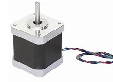

Stappenmotor© 2018, ProtoIt Platform: RASPBERRY |  |
Beschrijving:
Er bestaan twee soorten stappenmotoren: unipolaire en bipolaire. De unipolaire motor met 5 of 6 aansluitingen wordt nauwelijks meer gebruikt.
De populaire bipolaire motor heeft 4 aansluitdraden. Deze wordt hier ondersteund.
Verder zijn er veel drivers voor stappenmotoren op de markt. Deze zijn niet geschikt om met deze tegel samen te werken.
De draden van de stappenmotor moeten via stroomverterkers (bijv. een ULN2003 chip) op de Raspberry worden aangesloten.
De draden van de ene motorspoel worden op In1 en In2 aangesloten en van de andere spoel op In3 en In4.
LET OP! Je mag de draden van een stappenmotor niet rechtstreeks op de pinnen van de Raspberry aansluiten. Dan gaat de Raspberry stuk.
Onderdelen:
Stappenmotor
Instellingen:
| In1 | GPIO-pin waarop een draad van één van de spoelen wordt aangesloten. |
| In2 | GPIO-pin waarop de andere draad van die spoel wordt aangesloten. |
| In3 | GPIO-pin waarop een draad van de andere spoel wordt aangesloten. |
| In4 | GPIO-pin waarop de andere draad van die spoel wordt aangesloten. |
| Stappen/ronde | Aantal stappen die nodig zijn om een volledig rondje te draaien. |
| Min. vertr. (mics) | Minimale vertraging in microseconden die nodig is om de motor te laten draaien. |
| Draaihoek (°) | De hoek die de motor moet draaien. |
| Aantal stappen | Het aantal stappen dat de motor moet draaien. |
| Snelheid (%) | Vul een percentage van de maximum snelheid in. |
| Richting | Vul hier één van de Constante signalen voor de richting in: Vooruit, Achteruit of Stop. |
| Start wanneer? | Sleep een constant of uitgezonden signaal hiernaar toe. Standaard op het signaal Direct ingesteld |
| Stop wanneer? | Sleep een constant of uitgezonden signaal hiernaar toe. Standaard op Nooit ingesteld. |
| Klaar | Dit signaal wordt uitgezonden als de stappenmotor het ingestelde aantal stappen heeft gedraaid. |